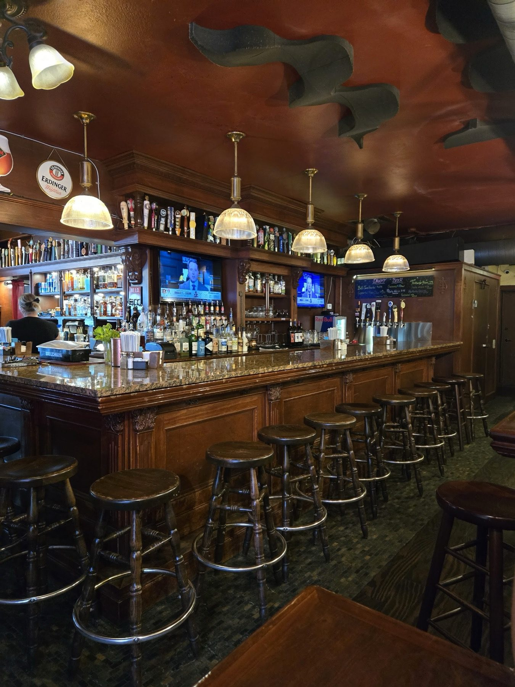

Homemade soups
Signature soups made in-house, by the cup, the bowl or the quart.
Stone Soup · Pinellas Park
Stone Soup Cafe & Pub serves Pinellas Park from St. Petersburg.
Coming from Pinellas Park? Stone Soup Cafe & Pub is in St. Petersburg, at 4122 16th St N. Homemade soups, sandwiches, 50 beers and a full bar, open daily from 11 AM.
Where to start.
Signature soups made in-house, by the cup, the bowl or the quart.

Made to order on rye, multigrain, white, swirl, pumpernickel or GF bread.

A full bar and 50 varieties of beer. Pull up a stool at the long wood bar.
4.6 2126 Google reviews
We had the best sandwiches and desserts at Stone Soup Kitchen. The food was excellent, service was great! The owners came over and spoke to us about gluten free options and we were so appreciative! We will be back!!!
Amazing little spot for sure! I love their soups and sandwiches combos and the fact that they have a full bar makes it that much better. The service is lighten fast and the food is delicious. Ive been here 4 times and every time has been better then the last, and responsibly priced!! Recommend ⭐️⭐️⭐️⭐️⭐️+👍👍
Love this place! I have been going here for 20 years and never had a bad meal or expirence! The soups are delicious! The environment is relaxed. You can grab a quick bite or watch a game at the bar.